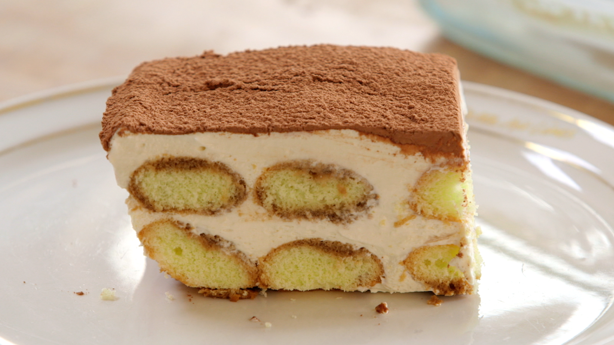

Tiramisu
Heerlijk als nagerecht.
Ingrediënten
- 3 eidooiers
- 50 g suiker
- 3 eiwitten
- 50 g poedersuiker
- 100 g mascarpone
- 100 g slagroom
- 1 pak lange vingers
- 100 ml espresso
- 4 of 5 eetlepels amaretto
- 3 eetlepels cacao
- een stuk geraspte of geschaafde chocolade
Bereidingswijze
- Klop de eidooiers dik en luchtig met de suiker.
- Klop de eiwitten stijf met de poedersuiker.
- Meng eigeel en eiwit met een spatel.
- Klop de mascarpone los en klop er de slagroom door, tot het mengsel lobbig is.
- Meng met een spatel door het eimengsel.
- Bedek een ovenschaal met lange vingers en giet er de espresso over.
- Bedek de ovenschaal met de helft van het mascarpone-eimengsel.
- Leg hier de rest van de lange vingers op en giet de amaretto erover.
- Bedek de ovenschaal met de rest van de mascarpone/ei.
- Bestrooi met behulp van een zeefje de ovenschaal met de cacao en vervolgens met de geraspte chocolade.
- Laat de tiramisu 1 uur in de vriezer of 3 uur (nog beter: een nacht) in de koelkast opstijven.

Met espresso of cappuccino en een glaasje dessertwijn/likeur/grappa.